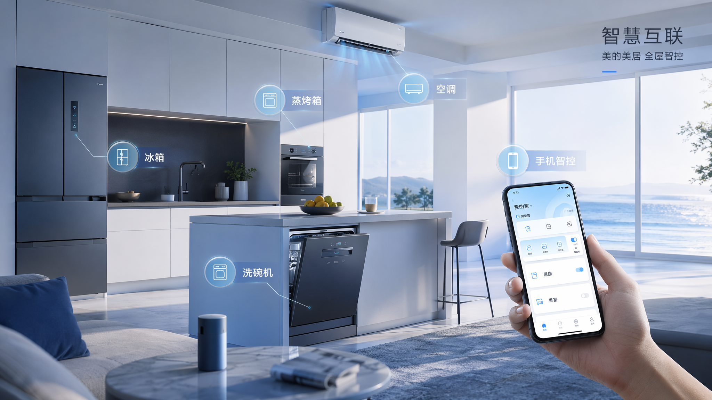

智能厨房全屋联动
官网 hero / 全屋智能入口
gpt-image-2generated

MAI-Image-2.5pending/error
MAI-Image-2.5
HTTP 404
MAI data-plane route still needs confirmation; placeholder kept for model comparison.
HTTP 404
MAI data-plane route still needs confirmation; placeholder kept for model comparison.
查看 / 复制 Prompt
现代开放式厨房，冰箱、洗碗机、蒸烤箱、空调与手机智能控制形成统一体验，蓝白清爽科技风，美的集团高端智慧家居视觉，柔和晨光，真实商业摄影，干净留白，不要可读文字，不要 logo。